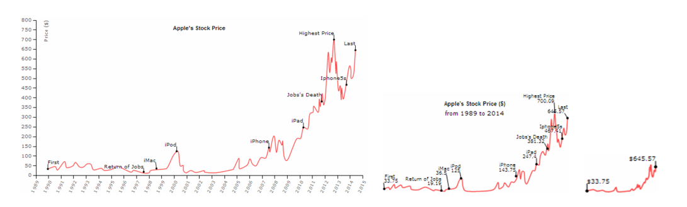

Implementation of algorithm via HTML, JavaScript and D3.
Source code not publicly available.
Based on cartographic generalization principles.
Automatically resizes line charts to fit different size requirements.
Algorithm:
Resize chart.
Identify elements.
Assign semantic importance.
Compute spatial metrics.
Apply generalization.

Semantic Resizing of Charts Through Generalization: A Case Study with Line Charts [Setlur and Chung 2021] Creative Commons Attribution 4.0 International (CC BY 4.0) licence